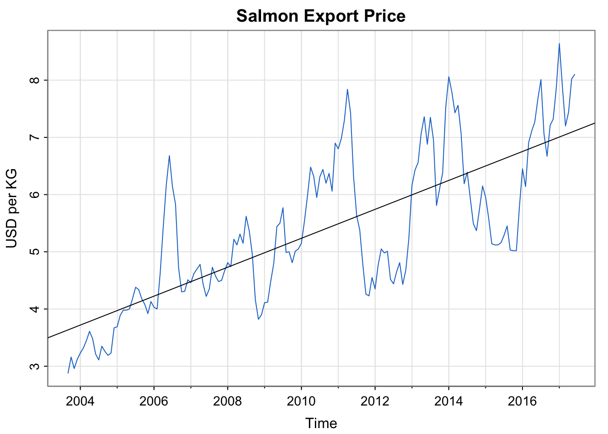
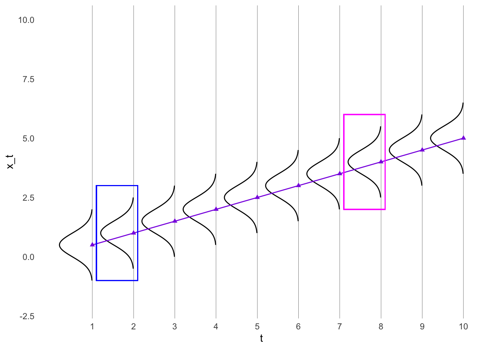
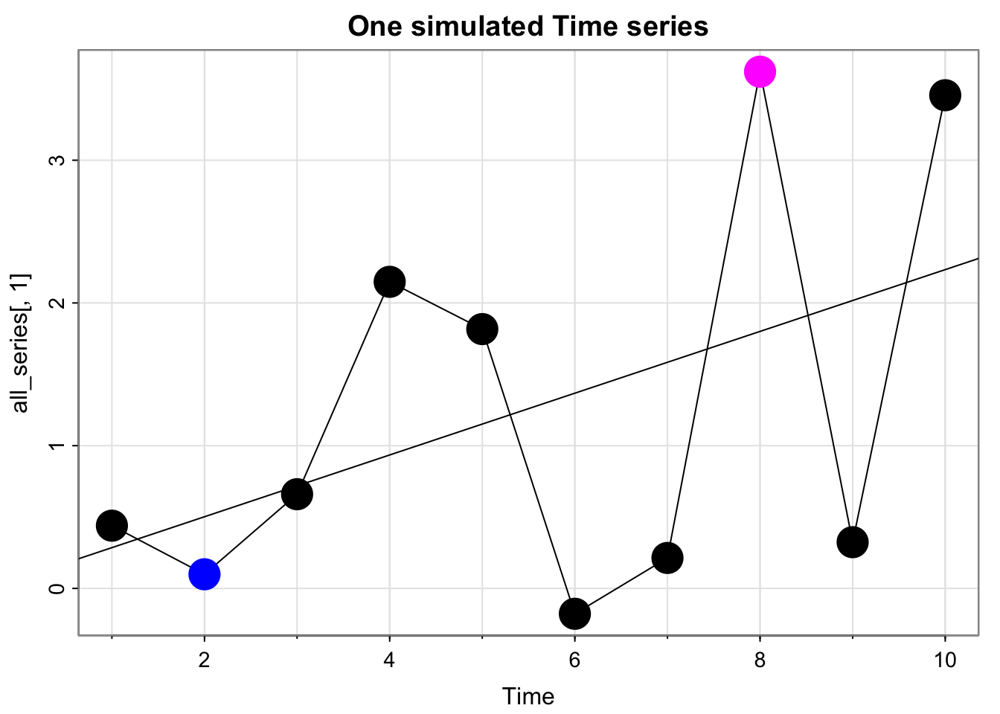
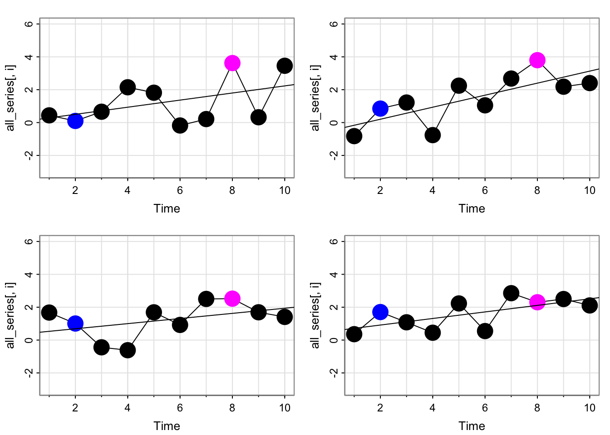
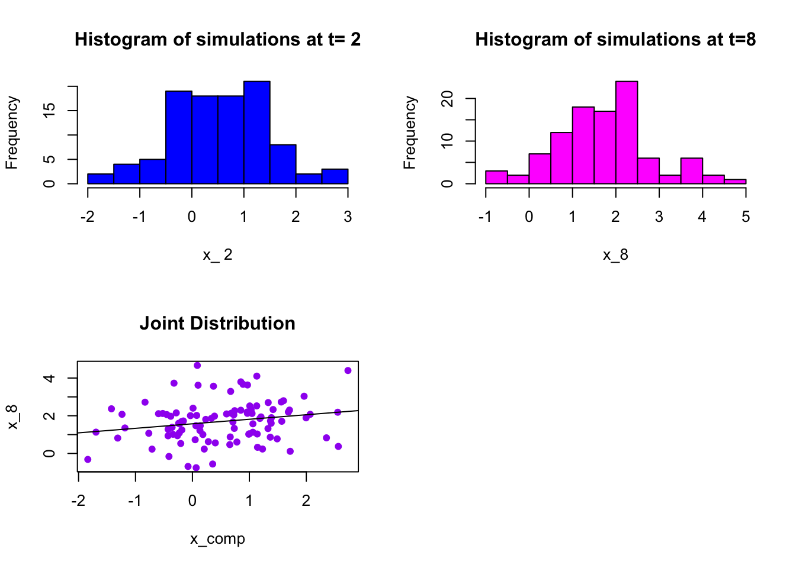
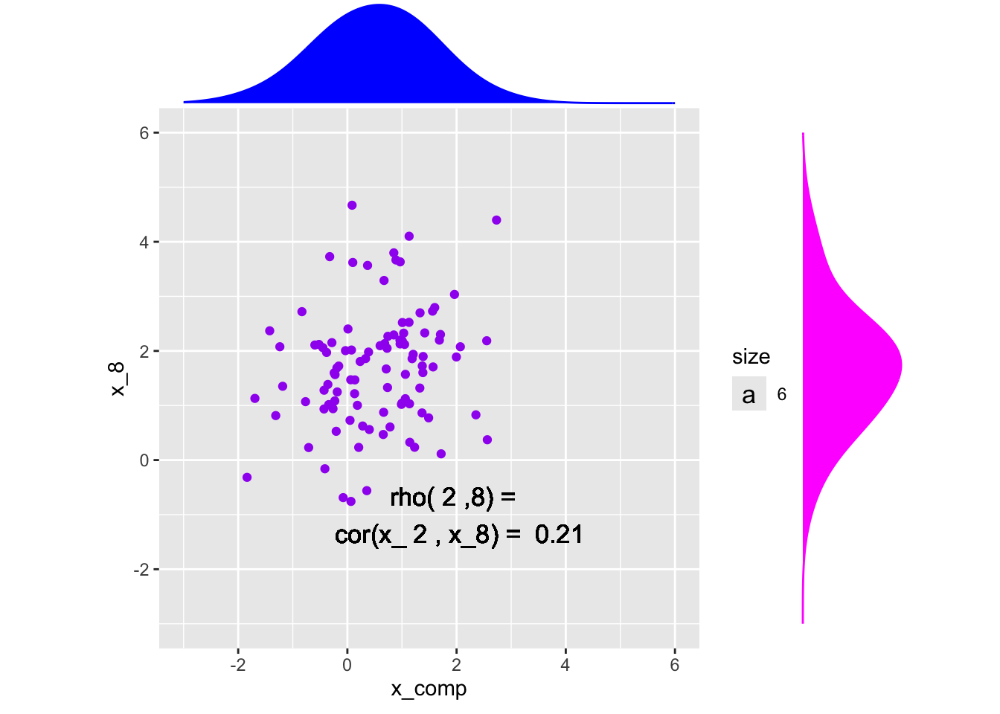
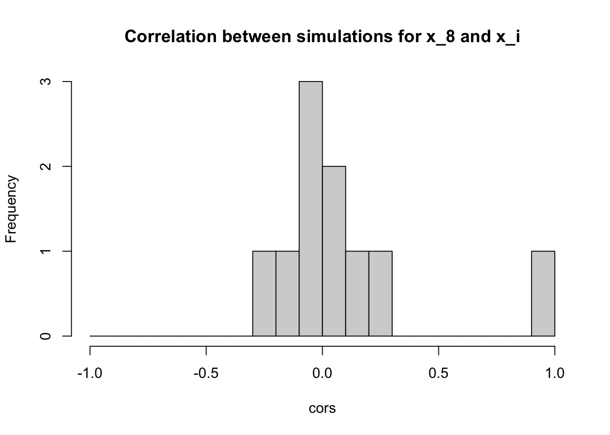
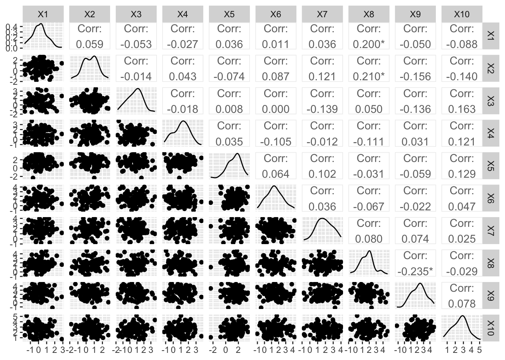

Assignments: Going forward, must submit rendered pdf of code portion. (if you want to be nice to me, do this for Assignment 2, but starts with Assignment 3)
Late quizzes: Going forward: Email me ahead of time, otherwise it’s a 0
Exam details: No use of computer, code will be covered but basic, notes sheet is allowed, practice test will be provided
Activity 1: Export Price of Salmon (Example 3.1)
Code
library(astsa)summary(fit <-lm(salmon~time(salmon), na.action=NULL))## ## Call:## lm(formula = salmon ~ time(salmon), na.action = NULL)## ## Residuals:## Min 1Q Median 3Q Max ## -1.69187 -0.62453 -0.07024 0.51561 2.34959 ## ## Coefficients:## Estimate Std. Error t value Pr(>|t|) ## (Intercept) -503.08947 34.44164 -14.61 <2e-16 ***## time(salmon) 0.25290 0.01713 14.76 <2e-16 ***## ---## Signif. codes: 0 '***' 0.001 '**' 0.01 '*' 0.05 '.' 0.1 ' ' 1## ## Residual standard error: 0.8814 on 164 degrees of freedom## Multiple R-squared: 0.5706, Adjusted R-squared: 0.568 ## F-statistic: 217.9 on 1 and 164 DF, p-value: < 2.2e-16tsplot(salmon, col=4, ylab="USD per KG", main="Salmon Export Price")abline(fit)

Activity 1: Export Price of Salmon (Example 3.1)
Does this time series appear stationary?
The (mathematical) equation in the book for the trend line above is:
There is a typo in this equation. Correct the typo. (hint: examine to the first few entries of time(salmon)
Why are there fractions of the year? Explain what the fractional values mean and describe how they appear in the data set within R.
Interpret the estimate of the slope.
Activity 2: Trend Stationarity (Example 2.19)
Consider the time series model \[x_t = \beta t + y_t\] Assume \(y_t\) is stationary with mean function \(\mu_y\) and and autocovariance function \(\gamma_y(h)\)
Compare this equation to the regression equation in the last example.
What are the mean function and autocovariance function of \(x_t\)?
Trend stationarity model
A time series which is nonstationary in the mean but is stationary in the autocovariance is sometimes called Trend stationarity.
I’m actually not sure if it just refers to linear trends?? I’ll ask people at my conference
Visualizing the autocovariance for trend stationarity
Code
library(ggplot2)set.seed(807)t <-seq(1, 10, 1)x_t <-0.5*t #x <- x - mean(x)#y <- y - mean(y)df <-data.frame(t, x_t)# For every row in `df`, compute a rotated normal density centered at `y` and shifted by `x`curves <-lapply(seq_len(NROW(df)), function(i) { mu <- df$x_t[i] range <- mu +c(-1.5, 1.5) seq <-seq(range[1], range[2], length.out =100)data.frame(t =-1*dnorm(seq, mean = mu, sd =0.5) + df$t[i],x_t = seq,grp = i )})# Combine above densities in one data.framecurves <-do.call(rbind, curves)new.x =seq(from =1, to =10, by = .1)new.y = .5*new.xtrend_line <-data.frame(x = new.x,y = new.y)ggplot(df, aes(t, x_t)) +geom_point(col ="blueviolet", pch =17) +#geom_line() +# The path draws the curvegeom_path(data = curves, aes(group = grp)) +geom_line(data = trend_line, aes(x=x,y=y), col ="blueviolet") +lims(y =c(-2,10)) +scale_x_continuous(breaks =seq(1, 10, by =1)) +theme_minimal() +theme( # remove the vertical grid linespanel.grid =element_blank() ,# explicitly set the horizontal lines (or they will disappear too)panel.grid.major.x =element_line( size=.1, color="black" )) +geom_rect(aes(xmin =1.1, xmax =2.1, ymin =-1, ymax =3), fill =NA, col ="blue")+geom_rect(aes(xmin =7.1, xmax =8.1, ymin =2, ymax =6), fill =NA, col ="magenta")
Warning: The `size` argument of `element_line()` is deprecated as of ggplot2 3.4.0.
ℹ Please use the `linewidth` argument instead.

Code
# The polygon does the shading. We can use `oob_squish()` to set a range.#geom_polygon(data = curves, aes(y = scales::oob_squish(y, c(0, Inf)),group = grp))
Simulate many time series from the trend stationarity model
Code
set.seed(807)Time <-10n_sim <-100all_series =matrix(rep(NA, times = n_sim*Time), nrow = Time)for(i in1:n_sim){ cs =0.25*1:Time # same thing w =rnorm(Time +50,0,1)#w_dep = stats::filter(w, filter = rep(1/3,3))[2:(Time + 1)]#all_series[,i] <- cs + w_dep all_series[,i] <- cs + w[2:(Time+1)]#names(all_series)[i] <- paste("sim_", i)}fit <-lm(all_series[,1]~time(all_series[,1]), na.action=NULL)tsplot(all_series[,1], main ="One simulated Time series", type ="b", col =c("black", "blue", rep("black", times =5), "magenta", "black", "black"), pch =16, cex =3)abline(fit)

Simulate many time series from the trend stationarity model
Code
par(mfrow =c(2,2))for(i in1:4){ fit <-lm(all_series[,i]~time(all_series[,i]), na.action=NULL)tsplot(all_series[,i], type ="b", col =c("black", "blue", rep("black", times =5), "magenta", "black", "black"), pch =16, cex =3, ylim =c(-3,6))abline(fit)}

Simulate many time series from the trend stationarity model
i =2x_comp <- all_series[i,]x_8 <- all_series[8,]par(mfrow =c(2,2))hist(x_comp, col ="blue", main =paste("Histogram of simulations at t=", i), xlab =paste("x_",i))hist(x_8, col ="magenta", main =paste("Histogram of simulations at t=8"), xlab ="x_8")plot(x_comp, x_8, col ="purple", pch =16, main ="Joint Distribution")abline(lm(x_8~x_comp))

Marginal and Joint Distributions
Code
library(ggplot2)library(ggExtra)x <-data.frame(x_comp, x_8)# Save the scatter plot in a variablep <-ggplot(x, aes(x = x_comp, y = x_8)) +geom_point(col ="purple") +xlim(-3,6) +ylim(-3,6)+geom_text(aes(x =2, y =-1, label =paste("rho(",i,",8) = \n cor(x_",i,", x_8) = ", round(cor(x_comp, x_8),3)), size =6)) +coord_fixed() # Arguments for each marginal histogramggMarginal(p, type ="density", adjust =2,xparams =list(col ="blue", fill ="blue"),yparams =list(col ="magenta", fill ="magenta"))
Warning in geom_text(aes(x = 2, y = -1, label = paste("rho(", i, ",8) = \n cor(x_", : All aesthetics have length 1, but the data has 100 rows.
ℹ Please consider using `annotate()` or provide this layer with data containing
a single row.
All aesthetics have length 1, but the data has 100 rows.
ℹ Please consider using `annotate()` or provide this layer with data containing
a single row.

Do this for all possible combos of \(s\) and \(t\)
cors <-apply(all_series, 1, function(x){cor(x, all_series[8,])})hist(cors, breaks =seq(-1, 1, by = .1), main ="Correlation between simulations for x_8 and x_i")

Are these all the correlations?
No, just pairwise with \(x_8\). We could do all possible pairs:
Code
library(GGally)
Registered S3 method overwritten by 'GGally':
method from
+.gg ggplot2
Code
ggpairs(data.frame(t(all_series)))

Distribution of all the correlations:
Code
coords <-t(combn(10,2))cors <-NULLfor(i in1:nrow(coords)){ cors <-c(cors, cor(all_series[coords[i,1],], all_series[coords[i,2],]))}cors <-c(cors, rep(1, times =10))hist(cors, breaks =seq(-1, 1, by = .1), main ="Correlation between simulations for x_s and x_t")
If a process is trend stationary (nonstationary in the mean, but stationary in the variance), can we just subtract off the trend and get back a stationary time series?
Yes, and that’s called detrending
Activity 3: Detrending a commodity (Example 3.7)
Given the code to generate the plot with the trend line, how would you view the equation of the trend line?
Visualize the de-trended series
Compute the acf of the salmon series and the detrended series. What do you notice?
Next time
Cross-correlation and regression with multiple time series (\(x_t\) on x-axis instead of \(t\) on x-axis like with the salmon)